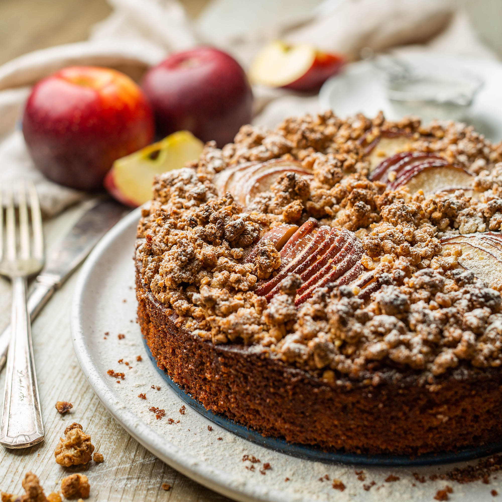

Wheather
Publicity

Making protein out of thin air

Air Protein CEO, Lisa Dyson, explains how her company leveraged NASA technology to create a protein source from the air that we breathe. We are going to have to feed a lot more people in thirty years’ time. In fact, the United Nations predicts that the food industry will have to provide for almost 10 billion people by 2050 – an increase of nearly 20 percent on the current population.
Vegan apple cake
Make this apple and almond cake to fill your cake tin. It's an ideal treat for anyone following a dairy-free or vegan diet, and is delicious for afternoon cup of tea.
Ingredient upcycling

Jaclyn Bowen explains how some food manufacturers are saving money and the environment through ingredient upcycling.